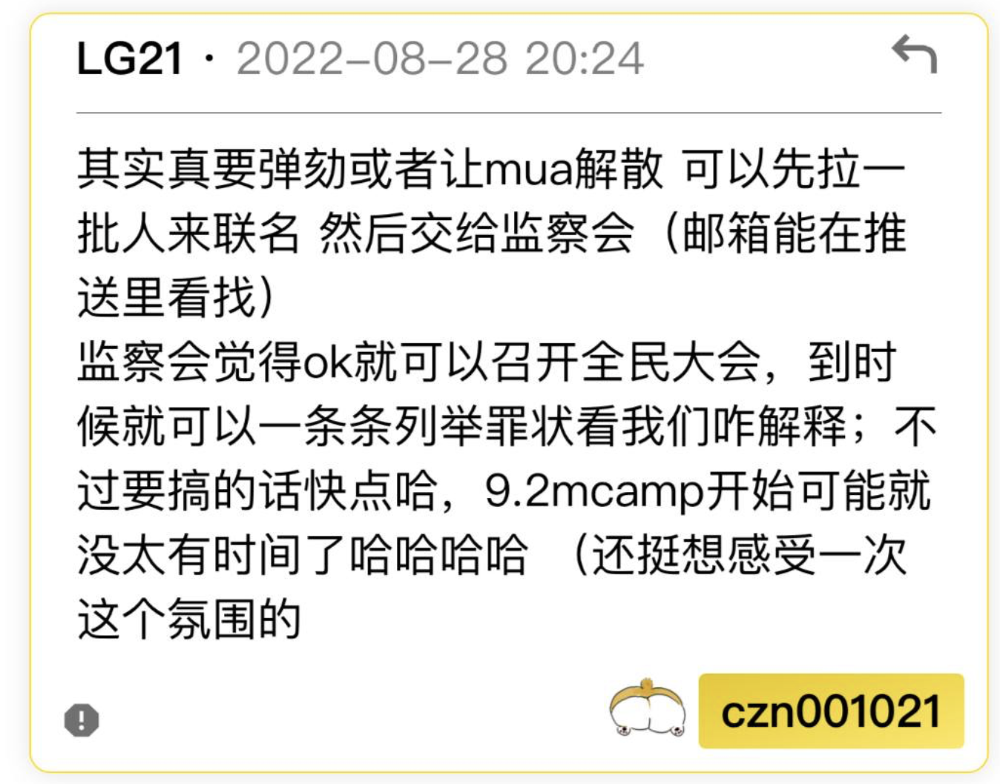

联署召开全民投票解散香港中文大学内地生联合会(MUA)及其一切附属组织
原联署表格(已弃用)
最后编辑于 2/10/2022
联署于 6 Sep 2022 14:00发起
7 Sep 2022 8:00 已获得十人签署
7 Sep 21:00 2022 已获得二十人签署
8 Sep 2022 10:00 已获得三十人签署
8 Sep 21:00 2022 已获得四十人签署
2 Oct 20:00 2022 已获得五十人签署
联署目的：
腐朽堕落的MUA组织身为我们内地生的领袖组织，吸着我们的血，却没有履行任何对我们的义务。这个组织已经走到了历史尽头，应当由我们亲手推翻。此次联署的目标是是解散MUA及其一切附属组织。
解散原因：
其一：仅就2022年选举至今：
- MUA当选内阁“廿梧”抄袭往届内阁政纲，被发现后便装死拒绝回应。当选内阁在第一天便爆出丑闻实属罕见，接下来一年的内阁已经失去了信用。
- 2.MUA没有丝毫为内地生发声的迹象。希望大家能认清现状，放弃“MUA为我们争取诉求”的幻想。 4月至今，长达五个月的时间，无论是临时行政会或是当选内阁，无论是迫切期待GPA改革或是内地生ocamp的安排，MUA要么视而不见，要么顺其自然：作为传声筒传达学校的意思。不论是否能左右结果，MUA连争取权益的态度都没拿出来：没有看到据理力争的邮件/电话，没有组织内地生联名请愿，更别说稍微激烈些的抗争手断了。
- 3.MUA的内地生ocamp很失败。成本高昂，安排混乱，考虑不周。很多参与者都表达除了他们的不满。此外，MUA带领初到香港的新生们，组织超过500人群聚活动，无视香港法律及防疫规定，破坏了内地生一直重视的香港法治，贻害无穷。
其二：对MUA这个组织的评论：
论纲：
- 内地生不需要一个领袖组织
- MUA丑闻频出
- MUA无力组织活动
- MUA无法为内地生争取权利
- MUA失去民心
- MUA操纵选举
- MUA控制成员流动
- MUA控制不利舆论
- MUA作奸犯科
- MUA没有未来
联署法理依据：
MUA会章 第十二条 全民投票可由百分之七点五以上基本会员联署召开。
暂未知MUA会员总数，因此无法计算“百分之七点五以上基本会员”人数。根据1月23日弹劾案，该人数约为80。
由于会章未提及解散该组织程序，在此采用MUA临时行政会主席释宪(参见下图)。希望MUA在汹涌的民意之下自行解散。
MUA临时行政会主席释宪

收集个人资料声明：
会章订明，仅有基本会员有权联署。本表单所收集之个人资料仅会用于确认联署人身份之用途。除MUA监察会外，所有个人资料不会被联署发起者泄露给任何第三方。本联署结果被发送给监察会之前，联署发起者会采取措施，尽力确保监察会对个人资料采取同等程度的保护。联署者提交此表单，即代表同意收取监察会可能发出之身份确认邮件。任何所得之个人资料均会依照《个人资料（私隐）条例》予以保护。如联署者未能提供正确的个人资料，其联署可能无效；如联署者故意提供错误资料，其行为可能触犯香港法例。
发起人的联络方式：
disqualify.mua@gmail.com
欢迎加入Telegram群 @dqmua 讨论